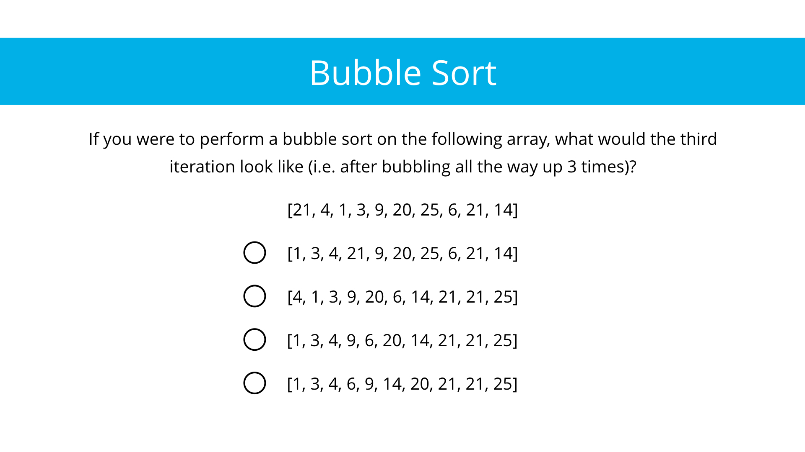

09. Bubble Sort Practice
Bubble Sort Practice
Question:
Sorting techniques can be tricky—sometimes the best way to understand them is to watch a visual of a sorting algorithm in action again and again. When I was first learning sorting, I used to check out the Wikipedia page for each sort. There's normally some colorful illustration near the top, then a GIF showing the sort in action. There are plenty of other visualizations on the World Wide Web—take the time to look around if you need it!
Start Quiz:

Solution:
If you struggled, examine what the array looks like at each iteration:
[21, 4, 1, 3, 9, 20, 25, 6, 21, 14] (Original Array)
[4, 1, 3, 9, 20, 21, 6, 21, 14, 25] (1)
[1, 3, 4, 9, 20, 6, 21, 14, 21, 25] (2)
[1, 3, 4, 9, 6, 20, 14, 21, 21, 25] (3)
[1, 3, 4, 6, 9, 14, 20, 21, 21, 25] (4)